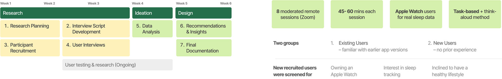
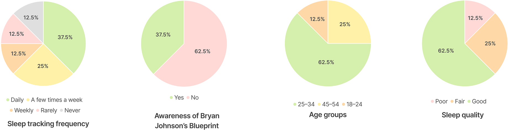
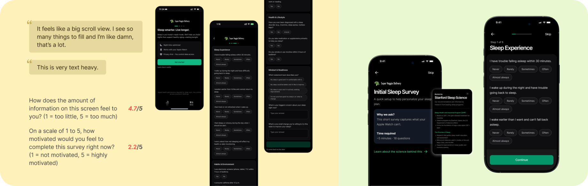
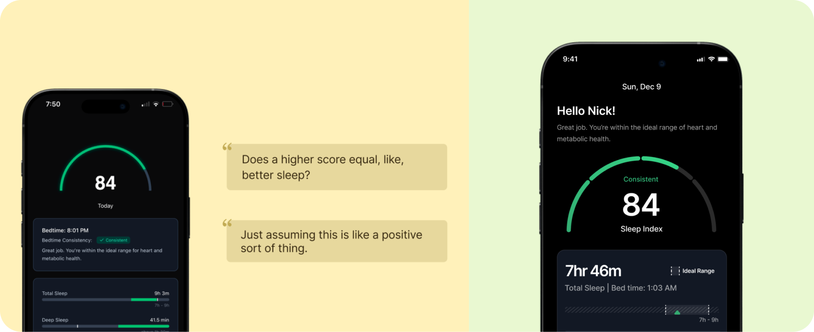
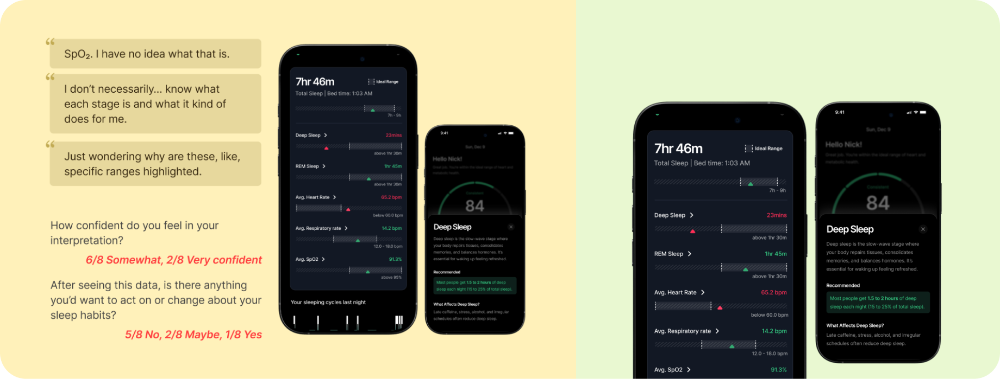
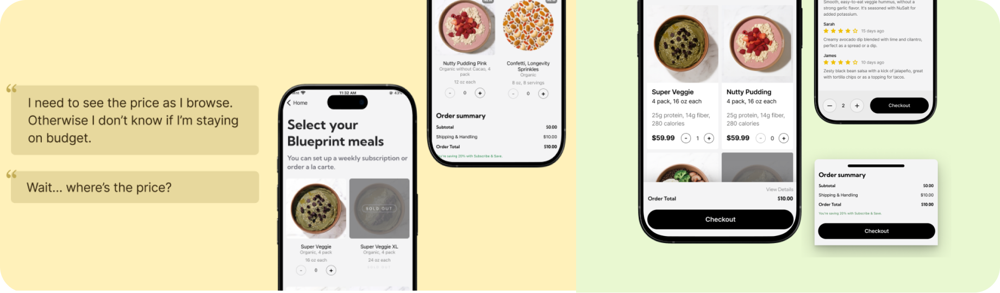
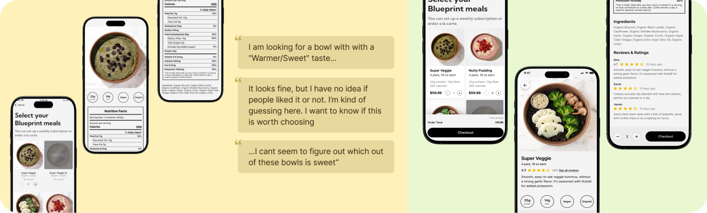

From Health Awareness to Health Action
Through an 8-user study across sleep tracking and meal browsing, this report identifies where the experience stalls and how redesigned flows can turn health data into decisions users actually act on.
Client
Super Veggie
Team
4 Researchers (Me)
Duration
2025.11-12
Context
Extending the Meal Experience Into Sleep Tracking
Inspired by Bryan Johnson's longevity protocol, Super Veggie launched in 2022 as a couple-owned meal delivery service offering ready-to-eat organic meals. This fall, the team expanded its scope by integrating a sleep tracking MVP into the original app, moving from feeding users well to helping them rest well. With the new feature live, founder Nick wanted to understand how real users were experiencing both sides of the product. That question drove this study: an 8-user moderated usability evaluation across Superveggie's sleep tracking and meal browsing flows, producing a prioritised set of findings and actionable redesign recommendations.
Timeline & research Methodology

Participant Profile
Health-aware ones, but mostly seeing Super Veggie with fresh eyes
This study included 8 participants, primarily first-time users, across different age groups and sleep habits. Notably, all participants were healthcare providers with prior experience using Apple Watch for sleep and health tracking.

How might we ensure
1. {the sleep data into meaningful, actionable insights}
2. {the meal order flow helps informed, health-driven decisions}
while remaining intuitive and satisfying, especially for first-time users?
Recommendation #1
Create a more user-friendly, low-friction survey experience
The current sleep survey feels cognitively demanding due to its long scrolling format, excessive open-ended questions, and low-visibility navigation actions. Users felt overwhelmed by the number of questions shown at once, became reluctant to type lengthy responses, and often missed the skip option placed at the bottom of the page, increasing fatigue and drop-off risk.
To reduce friction and support faster completion, the redesign focused on simplifying interaction patterns and improving navigation clarity.
Break the survey into shorter multi-step sections to reduce perceived effort and provide clearer progress.
Replace open-ended inputs with multiple choice, dropdowns, or quick-tap selections whenever possible.
Add visible skip and sticky navigation actions so users can move forward without excessive scrolling.

Recommendation #2
Improve interpretability and clarity through personalization, definitions, and visual refinements
Users struggled to interpret the Sleep Screen due to unclear score meaning, unfamiliar health metrics, and misleading visual indicators that did not match their mental models. Non-expert users were unsure whether their sleep score was good or bad, found terms like REM and SpO₂ difficult to understand, and often misread the chart indicators by assuming the green bars represented their own performance rather than the ideal range.
To make sleep insights easier to understand and act on, the redesign focused on improving clarity, guidance, and visual interpretation.
Add personalized messages to help users quickly interpret their sleep score and progress.
Provide expandable explanations for metrics such as REM, Deep Sleep, and SpO₂.
Improve chart clarity by visually distinguishing the user’s actual value from the ideal range.


Recommendation #3
Making pricing and checkout actions visible for confident, seamless decisions
Pricing visibility and purchase progression created friction throughout the selection flow. Prices and running totals were hidden at the bottom of the page, making affordability harder to evaluate at a glance. Users also expected to continue purchasing directly from the meal details page, but were forced to backtrack, disrupting momentum and causing confusion during checkout.
To create a smoother and more intuitive purchase flow, the redesign focused on improving cost visibility and reducing navigation friction.
Add per-meal pricing directly to product cards for easier comparison.
Introduce a fixed bottom bar showing the running order total with expandable fee details.
Add a clear checkout or “Add to Cart” action on the meal details page to support seamless progression.

Recommendation #4
Making Health and Taste Cues Visible at the Right Moments
Users identified nutrition values as a key factor in meal selection, but this information is only visible on the details page, forcing repeated back-and-forth comparisons that interrupt browsing flow. At the same time, limited taste and sensory descriptions made meals difficult to evaluate, leaving users uncertain about flavor, texture, and overall eating experience.
To support faster and more confident meal selection, the redesign focused on improving information visibility and reducing comparison effort.
Add nutrition macros and pricing directly to product cards for faster comparison.
Include short taste descriptions covering flavor, texture, and spice level.
Reduce unnecessary taps and support quicker decision-making.

Reflection
Data Alone Doesn’t Drive Action
One of the key learnings from the SuperVeggie project was recognizing that presenting data does not necessarily lead to behavioral change. Initially, we focused on making sleep and nutrition insights more visible and understandable, assuming that clearer data would naturally translate into better decisions.
However, user research showed a gap between understanding and action. Even when users could interpret their sleep patterns or meal information, they often struggled to translate those insights into concrete next steps. This revealed a flawed assumption in my thinking: I treated information clarity as the endpoint, rather than a step within a larger decision-making process.
In retrospect, the product was effective at answering “what is happening”, but weak at guiding “what should I do next.” This is especially critical in health-related contexts, where users need actionable guidance, timely prompts, and contextual support, not just passive dashboards.
Let's build something.
Together!
Together!


New York City